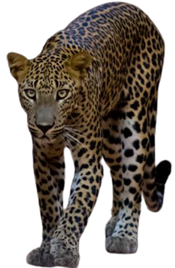
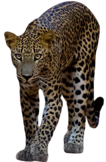

Sri Lanka is renowned for its incredible biodiversity, and the Wildlife of Sri Lanka section brings you closer to the fascinating creatures that inhabit this island paradise. From the lush jungles to the vast savannas, our featured topics explore the diverse ecosystems that make Sri Lanka a unique destination for wildlife enthusiasts.
Discover the Sri Lankan Leopard, a majestic big cat that roams the wild landscapes of the island. Dive into the rich history and conservation efforts led by the Department of Wildlife Conservation. Explore the renowned Yala National Park and the pristine Wilpattu National Park, home to a myriad of species. Join us on a journey to unveil the wonders of Sri Lanka's wildlife!
Explore Sri Lankan Wildlife
Sri Lanka, a jewel in the Indian Ocean, boasts an extraordinary tapestry of biodiversity that beckons the adventurous at heart. Our Wildlife of Sri Lanka section invites you to delve deeper into the enchanting realms of this island paradise. Traverse the vibrant jungles and expansive savannas as our featured topics unravel the secrets of Sri Lanka's distinct ecosystems, making it an unparalleled haven for wildlife enthusiasts.
Join Us on this Wildlife Odyssey
Embark on a journey that transcends the ordinary and promises
encounters with some of the world's most captivating creatures.
Discover the wonders that make Sri Lanka an unparalleled
destination for wildlife enthusiasts. Let our exploration be your
guide to the heart of this biodiversity-rich island.
Did You Know?
The Sri Lankan Leopard is the largest of the eight known
subspecies of leopard. It is also the largest predator in Sri
Lanka.
Some more interesting facts about the Sri Lankan Leopard,
-
Endemic Species: The Sri Lankan Leopard (Panthera pardus
kotiya) is a subspecies of leopard found only on the
island of Sri Lanka. -
Distinctive Appearance:
-
Characterized by a golden-yellow coat adorned with dark
rosettes, Sri Lankan Leopards have a unique
and recognizable appearance. - Their distinctive markings provide effective camouflage in various Sri Lankan ecosystems.
-
Characterized by a golden-yellow coat adorned with dark
rosettes, Sri Lankan Leopards have a unique
-
Habitat Variety: These leopards inhabit a range of ecosystems,
including dense rainforests, grasslands, and scrublands,
showcasing their adaptability. -
Skilled Predators: Sri Lankan Leopards are skilled climbers
and swimmers, enabling them to pursue and capture a diverse
range of prey, from deer and wild boar to smaller mammals.
 

Explore the Untamed Beauty of Sri Lanka's Wildlife
Sri Lanka, a jewel in the Indian Ocean, beckons wildlife enthusiasts with its diverse ecosystems and rich biodiversity. Nestled amidst lush landscapes, the island nation offers a unique opportunity to witness a myriad of species in their natural habitats.
- Breathtaking Biodiversity: From majestic elephants and elusive leopards to vibrant bird species.
- Unique Safari Experiences: Engage in thrilling safari excursions across the country's renowned national parks.
- Captivating Avian Wonders: Sri Lanka is a birdwatcher's paradise, with over 430 bird species.
- Conservation Success Stories: Learn about Sri Lanka's dedicated conservation efforts.
- Picturesque Landscapes: Immerse yourself in mist-covered mountains, lush jungles, and picturesque settings.
Embark on an unforgettable journey as you delve into the heart of Sri Lanka's wildlife haven. The juxtaposition of captivating landscapes and thriving ecosystems creates a sanctuary for nature lovers. Whether you're a seasoned wildlife enthusiast or a first-time explorer, Sri Lanka promises an immersive experience, unveiling the wonders of its untamed wilderness.